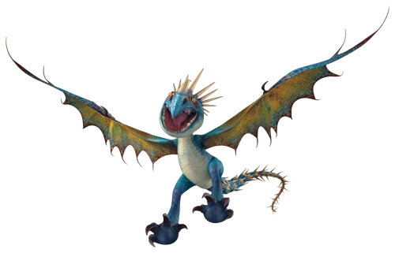

Náder Mortífero
Introduccion
Clase: Rastreadora
Habilidad/es: Dispara espinas venenosas con su cola, fuego de magnesio líquido, gran olfato
Hábitat: Bosque
¿Se puede entrenar? Sí
Ataque: 10
Velocidad: 8
Armadura: 16
Poder de fuego: 14
Límite de disparos: 6
Veneno: 16
Mandíbula: 5
Sigilo: 10
